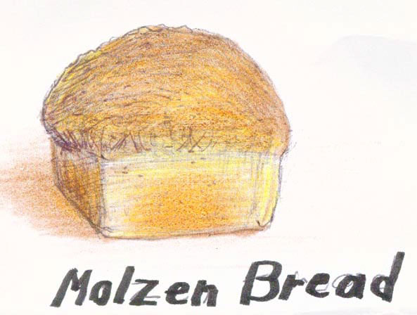
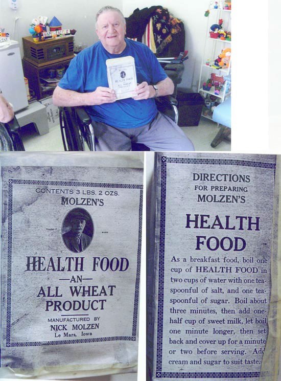

Molzen Health Food
What is Molzen Bread? It was a large square loaf of bread, origionally
made with Molzens Health Food, which was a coarse ground wheat. Pete Sr
was always going to write up the story of Molzen Bread, but never did.

Then a few weeks ago, while I was visiting mother at Brentwood Good Samaritan
Home, a man wheeled up to me and said he was Leanard Molzen, and that his
dad Herb, and his dads uncle Nick were the ones who grew, washed, and
ground the wheat that was used to make the origional Molzen Bread. He
invited me to his room where he had an origional box, and told how his
father and Nick would process the wheat into Molzen's Health Food.

Tue, July 25th 2006, 2:37 PM PDT
john molzen
I have purched Molzen Bread. My wife and I love it.